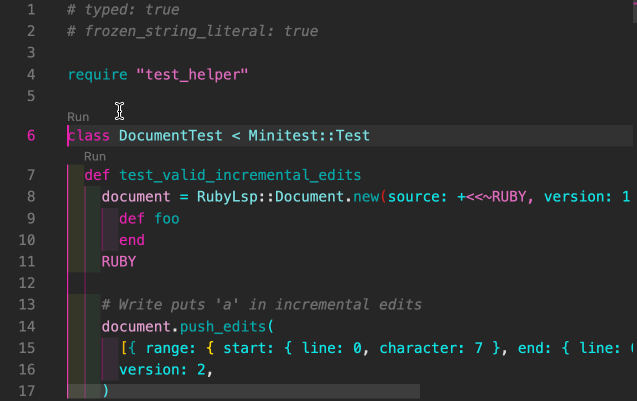

class RubyLsp::Requests::CodeLens

The code lens request informs the editor of runnable commands such as tests
Example¶ ↑
# Run class Test < Minitest::Test end
Constants
- ACCESS_MODIFIERS
- BASE_COMMAND
- ResponseType
- SUPPORTED_TEST_LIBRARIES
Attributes
response[R]
Public Class Methods
new(uri, emitter, message_queue, test_library)
click to toggle source
Calls superclass method
RubyLsp::Listener::new
# File lib/ruby_lsp/requests/code_lens.rb, line 35 def initialize(uri, emitter, message_queue, test_library) super(emitter, message_queue) @uri = T.let(uri, URI::Generic) @external_listeners.concat( Extension.extensions.filter_map { |ext| ext.create_code_lens_listener(uri, emitter, message_queue) }, ) @test_library = T.let(test_library, String) @response = T.let([], ResponseType) @path = T.let(uri.path, T.nilable(String)) # visibility_stack is a stack of [current_visibility, previous_visibility] @visibility_stack = T.let([["public", "public"]], T::Array[T::Array[T.nilable(String)]]) @class_stack = T.let([], T::Array[String]) emitter.register( self, :on_class, :after_class, :on_def, :on_command, :after_command, :on_call, :after_call, :on_vcall, ) end
Public Instance Methods
after_call(node)
click to toggle source
# File lib/ruby_lsp/requests/code_lens.rb, line 137 def after_call(node) _, prev_visibility = @visibility_stack.pop @visibility_stack.push([prev_visibility, prev_visibility]) end
after_class(node)
click to toggle source
# File lib/ruby_lsp/requests/code_lens.rb, line 79 def after_class(node) @visibility_stack.pop @class_stack.pop end
after_command(node)
click to toggle source
# File lib/ruby_lsp/requests/code_lens.rb, line 118 def after_command(node) _, prev_visibility = @visibility_stack.pop @visibility_stack.push([prev_visibility, prev_visibility]) end
merge_response!(other)
click to toggle source
# File lib/ruby_lsp/requests/code_lens.rb, line 153 def merge_response!(other) @response.concat(other.response) self end
on_call(node)
click to toggle source
# File lib/ruby_lsp/requests/code_lens.rb, line 124 def on_call(node) ident = node.message if node.message.is_a?(SyntaxTree::Ident) if ident ident_value = T.cast(ident, SyntaxTree::Ident).value if ACCESS_MODIFIERS.include?(ident_value) visibility, _ = @visibility_stack.pop @visibility_stack.push([ident_value, visibility]) end end end
on_class(node)
click to toggle source
# File lib/ruby_lsp/requests/code_lens.rb, line 63 def on_class(node) @visibility_stack.push(["public", "public"]) class_name = node.constant.constant.value @class_stack.push(class_name) if class_name.end_with?("Test") add_test_code_lens( node, name: class_name, command: generate_test_command(class_name: class_name), kind: :group, ) end end
on_command(node)
click to toggle source
# File lib/ruby_lsp/requests/code_lens.rb, line 104 def on_command(node) node_message = node.message.value if ACCESS_MODIFIERS.include?(node_message) && node.arguments.parts.any? visibility, _ = @visibility_stack.pop @visibility_stack.push([node_message, visibility]) elsif @path&.include?("Gemfile") && node_message.include?("gem") && node.arguments.parts.any? remote = resolve_gem_remote(node) return unless remote add_open_gem_remote_code_lens(node, remote) end end
on_def(node)
click to toggle source
# File lib/ruby_lsp/requests/code_lens.rb, line 85 def on_def(node) class_name = @class_stack.last return unless class_name&.end_with?("Test") visibility, _ = @visibility_stack.last if visibility == "public" method_name = node.name.value if method_name.start_with?("test_") add_test_code_lens( node, name: method_name, command: generate_test_command(method_name: method_name, class_name: class_name), kind: :example, ) end end end
on_vcall(node)
click to toggle source
# File lib/ruby_lsp/requests/code_lens.rb, line 143 def on_vcall(node) vcall_value = node.value.value if ACCESS_MODIFIERS.include?(vcall_value) @visibility_stack.pop @visibility_stack.push([vcall_value, vcall_value]) end end